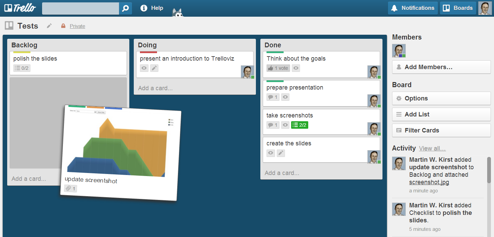

Trelloviz
An Introduction
Created by Martin W. Kirst / @nitram509
Trelloviz:
Visualization Tool
Trello.com
Lists and cards

Trelloviz gives answers
How is my/our (Kanban-) flow?
How many persons per card?
How much activity on my board?
What about last month?
...
Trelloviz
Cumulative Flow Diagram

Demo time

Feedback & Contribute
Third Party Licenses
This presentation uses GLYPHICONS,
Creative Commons Attribution 3.0 Unported (CC BY 3.0)